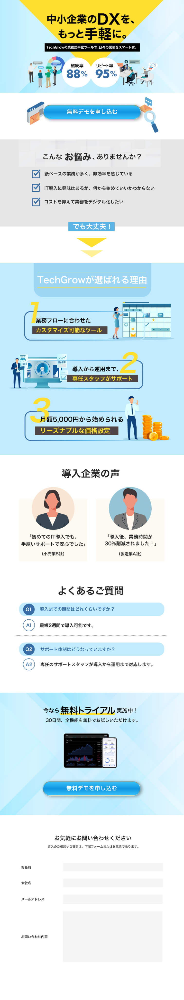

WORKS
ABOUT
CONTACT
WORKS
ABOUT
CONTACT
Teck Glow LP
# WEBサイト # 自主制作
PC版
×

ターゲット
DX化の必要性を感じつつも、「コスト」「人手不足」「IT知識の欠如」に悩む中小企業の経営者や担当者。特に、紙ベースの管理や属人化した業務フローを改善したいが、何から手をつければいいか分からない層
課題
従来のDXツールは「高額」で「設定が複雑」であり、導入のハードルが高すぎる。現場に適応しないツールを導入して失敗したくない、という慎重な姿勢がDX化を阻んでいる
目的
3つの安心材料を提示し、実務未経験でも手軽に導入できることを伝える。最終的に「無料デモ」や「無料トライアル」への心理的ハードルを下げ、見込み顧客を獲得する
サイト構成
共感： 「こんなお悩みありませんか？」と現場の課題を指摘 解決策： TechGrowが選ばれる3つの理由で、コストと手間の不安を解消 信頼： 導入企業の声やQ&Aを配置し、導入後のイメージを具体化 行動： 最後に「無料」を強調したクロージングで、背中を押し、フォームへ誘導することを意識しました。
デザイン
信頼感を表す「ブルー」を基調としつつ、中小企業の親しみやすさや「手軽さ」を表現するために、彩度の高い黄色をアクセントに使用しました。 また、DXという少し硬いテーマを柔らかく見せるため、ビジネスライクすぎないフラットなイラストを採用。情報を「3つのポイント」としてナンバリングし、視覚的に整理することで、忙しい経営者が流し読みしても重要なメリットが瞬時に伝わるように工夫しています。
また、情報をグルーピングすることで、ユーザーが迷わず必要な情報を見つけられるよう視認性を意識しました。
さらに、コーポレートカラーをそのまま使用すると画面が少し重くなると考えたため、写真の下に配置する四角などのエレメントは不透明度を下げて調整し、ブランドのコンセプトを保ちつつ、軽やかで明るいイメージに仕上げています。
制作期間
デザイン
3日
使用ツール
Photoshop
一覧へ戻る